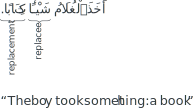

Not ready for study.
14 The proper noun
14.1 Introduction
Proper nouns are also known as names. Here are some examples of Arabic names:
| Men’s | names | Women’s | names |
|---|---|---|---|
| مُحَمَّد | Muḥammad | 2عَائِشَة | Ɛāʾis͡hah |
| سَعِيد | Saɛīd | 2فَاطِمَة | Faṭimah |
| ٱَلْحَسَن | al-Ḥasan | 2حَفْصَة | Ḥafṣah |
| ٱَلنُّعْمَان | al-Nuɛmān | 2سُمَيَّة | Sumayyah |
| 2طَلْحَة | Ṭalḥah | 2جَمِيلَة | Jamīlah |
| 2أُسَامَة | Usāmah | 2زَيْنَب | Zaynab |
| 2عُثْمَان | Ɛut͡hmān | 2مَرْيَم | Maryam |
| 2عُمَر | Ɛumar | 2سُعَاد | Suɛād |
| 2إِبْرَاهِيم | Ibrāhīm | 2أَسْمَاء | Asmāʾ |
| عَبْد ٱللَّـٰه | Ɛabd Allāh | 2لَيْلَىٰ | Laylā |
| أَبُو بَكْر | Abū Bakr | 2أُمّ حَبِيبَة | Umm Ḥabībah |
| Place | names | Misc. | names |
|---|---|---|---|
| 2مَكَّة | Makkah | 2رَمَضَان | Ramadān (a month) |
| 2دِمَشْق | Damascus | أُحُد | Uḥud (a mountain) |
| 2مِصْر | Egypt | ٱَلنِّيل | the Nile (a river) |
| ٱَلْقَاهِرَة | Cairo | ٱَلْفَاتِحَة | the Fātiḥah (a sūrah) |
| ٱَلْهِنْد | India | ٱَلْجُمُعَة | Friday |
Note the following points from the list abobe:
- Although some names begin with ٱَلْ, most don’t.
- Many names are semi-flexible (indicated by 2◌).
- Some names consist of more than a single word, like عَبْد ٱللَّـٰه Ɛabd Allāh
We will explain these and more details regarding proper nouns in this chapter.
14.2 Definiteness of proper nouns
Proper nouns differ from common nouns and adjectival nouns in a couple of important ways:
- All proper nouns, even if they don’t begin with ٱَلْ, are definite.
- A proper noun which does not begin with ٱَلْ, and which is fully-flexible, shall be tanwīned, despite being definite.
The above points are exemplified in the following sentence:
ذَهَبْتُ إِلَىٰ بَيْتِ مُحَمَّدٍ ٱلْكَرِيمِ وَزَيْنَبَ ٱلطَّيِّبَةِ.
d͡hahabtu ʾilā bayti muḥammadini -lkarīmi wazaynaba -ṭṭayyibah.
“I went to the house of the noble Muḥammad and the good Zaynab.”
Note the above from the above example:
- مُحَمَّدٍ is fully-flexible so it has a tanwīned kasrah ◌ٍ in the lowered-state.
- زَيْنَبَ is semi-flexible so it is not tanwīned, and instead has an fat·ḥah ◌َ in the lowered-state.
- The proper nouns مُحَمَّد and زَيْنَب are describees in descriptive noun phrases.
- Their describers (ٱلْكَرِيمِ and ٱلطَّيِّبَةِ., respectively) have ٱَلْ to match the definiteness of the definite proper noun describees. Furthermore, they both end with ◌ِ because they match the lowered-state of their describees.
14.3 Meanings of names
Many names are re-used from common nouns and adjectival nouns with positive meanings. Examples:
- مُحَمَّد Muḥammad “a highly praised onem”
- سَعِيد Saɛīd “a happy (fortunate) onem”
- ٱَلْحَسَن al-Ḥasan “the good onem”
- طَلْحَة Ṭalḥah “an acacia (tree)”
- جَمِيلَة Jamīlah “a beautiful onef”
It is possible for these names to sometimes (technically) cause a sentence to have an ambiguous meaning. For example,
جَلَسَ ٱلْحَسَنُ مَعَ سَعِيدٍ.
jalsa -lhasanu maɛa saɛīd
“al-Ḥasan sat with Saɛīd.”
or
“The good onem sat with a happy (fortunate) onem.”
Context would tell us whether the proper noun or the common/adjectival noun meaning is intended.
Note however the following sentence:
ذَهَبَتْ جَمِيلَةُ إِلَىٰ ٱلْبَيْتِ.
d͡hahabat jamīlatu ʾila -lbayt.
This sentence can only be understood to use جَمِيلَة with its proper noun meaning:
“Jamīlah went to the house.”
This is because جَمِيلَة is semi-flexible as a proper noun and fully-flexible as an adjectival noun or common noun. If جَمِيلَة were intended to be used with its adjectival noun or common noun meaning then it would have a tanwīned ḍammah ◌ٌ and the sentence would be:
ذَهَبَتْ جَمِيلَةٌ إِلَىٰ ٱلْبَيْتِ.
d͡hahabat jamīlatun ʾila -lbayt.
“A beautiful onef went to the house.”
We will learn why جَمِيلَة is semi-flexible as a proper noun in section @ref(proper-nouns-ending-with-looped-ta) below.
14.4 Flexibility of proper nouns
In this section we will discuss the flexibility of proper nouns. For now, we will deal only with proper nouns that do not begin with ٱَلْ. In terms of their flexibility, proper nouns consist of two types:
- Fully-flexible proper nouns.
- Semi-flexible proper nouns.
We will treat each of them below.
14.4.1 Fully-flexible proper nouns
For names that don’t begin with ٱَلْ, the default assumption is that they are fully-flexible, unless they fall into one of the categories of semi-flexible nouns (which we will study soon).
Examples of fully-flexible names are:
| مُحَمَّد | Muḥammad | مُعَاذ | Muɛād͡h |
| نُوح | Nūh | سَعْد | Saɛd |
| شُعَيْب | S͡huɛayb | عَمَّار | Ɛammār |
| عَلِيّ | Ɛalī | حَسَّان | Ḥassān |
| زَيْد | Zayd | سَعِيد | Saɛīd |
| أَنَس | Anas | أُحُد | Uḥud (a mountain) |
These are all masculine names.
Examples of sentences with fully-flexible proper nouns:
زَيْدٌ غُلَامٌ طَيِّبٌّ.
zaydun g͡hulāmun ṭayyib
“Zayd is a good boy.”
شَكَرَ أَنَسٌ عَلِيًّا.
s͡hakara ʾanasun ɛaliyyā.
“Anas thanked Ɛalī.”
لَبِسَ سَعِيدٌ قَمِيصَ نُوحٍ ٱلأَخْضَرَ.
labisa saɛīdun qamīṣa nūḥini -lʾak͡hḍar.
“Saɛīd wore Nūḥ’s green shirt.”
14.4.2 Semi-flexible proper nouns
The rules for the semi-flexibility of proper nouns are a little different from the rules for the semi-flexibility of common nouns and adjectival nouns that we learned in chapter @ref(semi-flexible-nouns). Proper nouns shall be semi-flexible if they fall under one of the categories below. Note that the categories are not mutually exclusive. That is: some semi-flexible proper nouns will fall into more than one category.
14.4.2.1 Names ending with ة
All names ending with ة shall be semi-flexible. This rule is specific to proper nouns. We have already seen that common nouns and adjectival nouns that end ith ة are fully-flexible.
Most such proper nouns are feminine names. Examples:
| 2خَدِيجَة | K͡hadījah | 2مَيْمُونَة | Maymūnah |
| 2فَاطِمَة | Faṭimah | 2صَفِيَّة | Ṣafiyyah |
| 2عَائِشَة | Ɛāʾis͡hah | 2خَوْلَة | K͡hawlah |
| 2سُمَيَّة | Sumayyah | 2جَمِيلَة | Jamīlah |
| 2حَفْصَة | Ḥafṣah | 2آسِيَة | Āsiyah |
However, some masculine names may end with ة too:
| 2حَمْزَة | Ḥamzah | 2مُعَاوِيَة | Muɛāwiyah |
| 2أُسَامَة | Usāmah | 2عِكْرِمَة | Ɛikrimah |
| 2طَلْحَة | Ṭalḥah | 2عُبَادَة | Ɛubādah |
Example:
طَلْحَةُ ٱلْطَّوِيلُ بَعْلُ جَمِيلَةَ ٱلْكَرِيمَةِ.
“The tall Ṭalḥah is the husband of the generous Jamīlah.”
14.4.2.2 Names ending with an extrinsic اء or ىٰ
Similar to common nouns and adjectival nouns, all names ending with an extrinsic اء or ىٰ shall be semi-flexible. These are usually feminine names. Examples:
| 2أَسْمَاء | Asmāʾ | 2لَيْلَىٰ | Laylā |
| 2دَرْدَاء | Dardāʾ | 2سَلْمَىٰ | Salmā |
Examples in sentences:
ذَهَبَتْ سَلْمَىٰ إِلَىٰ بَيْتِ أَسْمَاءَ.
“Salmā went tp Asmāʾ’s house.”
Sentence word order is usually pretty flexible. For stylistic reasons, it is permissible for a direct doee to precede the doer. For example,
سَأَلَتْ دَرْدَاءَ أَسْمَاءُ.
“Asmāʾ asked Dardāʾ”
But because words that end with ىٰ never display any state, then for these words the sentence word order becomes more rigid. So the following sentence:
سَأَلَتْ لَيْلَىٰ سَلْمَىٰ.
would usually only mean “Laylā asked Salmā.”
14.4.2.3 Names ending with an extrinsic ان
All names ending with an extrinsic ان will be semi-flexible.
This is somewhat different from the rule we learnt for common noun and adjectival nouns in section @ref(adjectival noun-an-diptote). There only adjectival nouns of the pattern فَعْلَان and whose feminine was not formed by adding ة to it were considered semi-flexible nouns.
Examples:
| 2عُثْمَان | Ɛut͡hmān | 2رَمَضَان | Ramaḍān |
| 2سُفْيَان | Sufyān | 2شَعْبَان | S͡haɛbān |
Example:
جَلَس عُثْمَانُ مَعَ سُفْيَانَ فِي رَمَضَانَ.
“Ɛut͡hmān sat with Sufyān in Ramaḍān.”
14.4.2.4 Names on the pattern أَفْعَل
All names on the pattern أَفْعَل shall be semi-flexible. Examples:
| 2أَحْمَد | Aḥmad | 2أَسْعَد | Asɛad |
14.4.2.5 Names of the pattern فُعَل
Names of the pattern فُعَل shall be semi-flexible. Examples:
| 2عُمَر | Ɛumar | 2مُضَر | Muḍar |
14.4.2.6 Names that are originally verbs
Names that are originally verbs are semi-flexible. Examples:
- 2يَزِيد Yazīd “He increases”
- 2يَعِيش Yaɛīs͡h “He lives”
Their origin as verbs will be apparent when we study resembling verbs.
14.4.2.7 Names of foreign origin
Names of foreign origin are generally semi-flexible. These include the names of angels, many of the previous prophets and messengers, and other persons. Examples:
| 2جِبْرِيل | Jibrīl | 2زَكَرِيَّا | Zakariyyā |
| 2إِبْرَاهِيم | Ibrāhīm | 2يَحْيَىٰ | Yaḥyā |
| 2إِسْمَاعِيل | Ismāɛīl | 2هَاجَر | Hājar |
| 2إِسْحَاق | Is·ḥāq | 2مَرْيَم | Maryam |
| 2يَعْقُوب | Yaɛqūb | 2يَأْجُوج | Yaʾjūj |
| 2يُوسُف | Yūsuf | 2مَأْجُوج | Maʾjūj |
| 2يُونُس | Yūnus | 2إِبْلِيس | Iblīs |
| 2إِدْرِيس | Idrīs | 2فِرْعَون | Pharoah |
| 2أَيُّوب | Ayyūb | 2هِرْقَل | Heraclius |
| 2مُوسَىٰ | Mūsā | 2كِسْرَىٰ | Chosroes |
| 2عِيسَىٰ | Ɛīsā | 2قَيْصَر | Caesar |
Note that 2فِرْعَون “Pharoah” as 2قَيْصَر “Caesar”, despite being titles, are treated as proper names.
The only exception to this rule is a masculine name of foreign origin that comprises of only three letters, and whose middle letter has an sukūn. Such a name will be fully-flexible. Example:
- نُوح Nūḥ
14.4.2.8 Feminine names
All feminine names, regardless of their origin, or their ending, shall be semi-flexible. We have already given examples of semi-flexible feminine names that end with ة, اء, and ىٰ, so we will provide other examples here:
| 2زَيْنَب | Zaynab | 2مَرْيَم | Maryam |
| 2سُعَاد | Suɛād | 2هَاجَر | Hājar |
The only exception to this rule is a feminine name of native Arabic origin, that comprises of only three letters, and whose middle letter has an sukūn. Such a name is permitted to be optionally fully-flexible or semi-flexible. Examples:
- هِنْد Hind
- دَعْد Daɛd
Example of usage:
ذَهَبَتْ هِنْدٌ إِلَىٰ بَيْتِ دَعْدٍ.
or
ذَهَبَتْ هِنْدُ إِلَىٰ بَيْتِ دَعْدَ.
“Hind went to Daɛd’s house.
14.5 The name فُلَان
The fully-flexible name فُلَان is used as a place-holder name in casual conversations. It may be translated into English as “so-and-so”. For example,
ظَلَمَ ٱلرَّجُلُ فُلَانًا وَغَدَرَ بِفُلَانٍ. “The man wronged so-and-so and he acted treacherously with so-and-so.”
For females, the name 2فُلَانَة is used.
صَدَقَتْ فُلَانَةُ.
“So-and-sof told the truth.”
14.6 Irregular spelling of the name عَمْرو Ɛamr
Irregularly, the fully-flexible name Ɛamr is written with a unpronounced و at its end: عَمْرو when in the raised-state and lowered-state. In the propped-state, the و is not added.
| Name | raised-state | propped-state | lowered-state |
|---|---|---|---|
| Ɛamr | عَمْرٌو ɛamrun | عَمْرًا ɛamran | عَمْرٍو ɛamrin |
Some have mentioned that this و was added in the spelling in order to distinguish it from the name 2عُمَر Ɛumar, when written without vowel marks. Or it could be the remnant of an older (pre-Islāmic) practice of appending a final و to personal names.1
14.7 The Replacement
Before we proceed with our discussion on proper nouns, we will take a short digression to discuss a grammatical concept called the replacement. We will only give a short preview here and will treat it fully in chapter @ref(the-replacement-chapter).
A replacement is a word that follows another word, the replacee, and replaces it from the perspective of the grammar of the sentence. The replacement is put in the same state as the replacee. Here is an example of a sentence with a replacement and a replacee:
In the above sentence, the word كِتَابًا “a book” is the replacement of شَيْـًٔا “something”. Therefore, it is put in the same propped-state.
The replacement is frequently used with proper nouns. For example,
ذَهَبَ ٱلْغُلَامُ إِلَىٰ بَيْتِ عَمِّهِ عَلِيٍّ.
“The boy went to his uncle Ɛalī’s house.”
In this sentence, the name عَلِيّ Ɛalī is the replacement of the replacee عَمّ “uncle”. Note, again, that the replacement comes after the replacee and matches it in state. However, the replacement does not need to come directly after the replacee. We can see that there is the pronoun ه “his” between them.
Here is another example:
سَأَلَ ٱلطَّالِبُ مُعَاذٌ ٱلْمُعَلِّمَ سَعْدًا.
“The student Muɛād͡h asked the teacher Saɛd.”
14.8 Annexed names
So far we have only dealt with proper nouns that are single words. There are some proper nouns that may be formed from two words that are in an annexation. These belong to different categories:
14.8.1 “Slave of” names
Some names are formed by annexing the noun عَبْد ɛabd “a slave” to one of the names of Allāh. The most common of these names are:
- عَبْد ٱللَّـٰه Ɛabd Allāh “the Slave of Allāh”
- عَبْد ٱلرَّحْمَـٰن Ɛabd al-Raḥmān “the Slave of the Most Merciful”
As usual, the base noun shall always be in the lowered-state. And the state of the annexe noun عَبْد is variable, depending on it’s function in the sentence. Example:
عَبْدُ ٱللَّـٰهِ هُوَ أَخُو عَبْدِ ٱلرَّحْمَـٰنِ. “Ɛabd Allāh is the brother of Ɛabd al-Raḥmān.”
14.8.2 “Parent of” names
It is common to call a man, not by his own given name, but rather by calling him the father of one of his children, usually his first born son. For example, if a man named أَحْمَد “Aḥmad” had a son named زَيْد “Zayd”, he may be called أَبُو زَيْد Abū Zayd “Zayd’s father”. Example of usage in a sentence:
ذَهَبْتُ إِلَىٰ بَيْتِ أَبِي زَيْدٍ.
“I went to Abū Zayd’s house.”
(Note how زَيْدٍ has a tanwīned kasrah ◌ٍ in the lowered-state because it is fully-flexible.)
While using the name of first-born son is more common, a daughter’s name could be used as well. Example,
سَأَلْتُ أَبَا رُقَيَّةَ سُؤالًا.
“I asked Abū Ruqayyah a question.”
(Note how رُقَيَّةَ has an fat·ḥah ◌َ in the lowered-state because it is semi-flexible.)
Women, too, are similarly called as the mother of one of their children. For example, the wife of the Prophet (may Allāh grant peace and confer blessing upon him) 2أُمّ حَبِيبَة Umm Ḥabībah was called thus because she had a daughter named 2حَبِيبَة from a previous marriage.
By the way, a person need not literally be a father or a mother to be called in such a way. These names may be applied as nicknames.
For example, the Companion of the Prophet (may Allāh grant peace and confer blessing upon him) was called 2أَبُو هُرَيرَة Abū Hurayrah because it is reported that he used to have a pet kitten (هُرَيْرَة). Here is an example of this name in a sentence.
أَبُو هُرَيْرَةَ صَحَابِيٌّ جَلِيلٌ.
“Abū Hurayrah is a great Companion.”
(Note how هُرَيْرَةَ is now considered a semi-flexible proper noun even though it may originally have been derived from the common noun “a kitten”.)
Similarly, the Companion أَبُو بَكْرٍ Abū Bakr is not known to have a son named بَكْر.
It is often the case that a “parent of” name overtakes the actual given name of person in popularity, and becomes the person’s name for all intents and purposes. Such is indeed the case for the Companions أَبُو بَكْرٍ Abū Bakr and 2أَبُو هُرَيرَة Abū Hurayrah.
14.8.3 “Son of” names
In a manner similar to “parent of” names, a person may be referred to as the son of his parent. For example, the Companion 2عُمَر Ɛumar had a son named عَبْد ٱللَّـٰه Ɛabd Allāh. He is commonly known as 2ٱِبْن عُمَر Ibn Ɛumar “Ɛumar’s son”.
Attributing a son to his father is most common. But attributing him to a mother or other ancestor is also possible.
Examples:
- the Companion عَمَّار was affectionately called 2ٱِبْن سُمَيَّة Ibn Sumayyah “Sumayyah’s son” by the Prophet (may Allāh grant peace and confer blessing upon him). His mother Sumayyah was an early martyr in Islām.
- the famous scholar ٱِبْن كَثِير Ibn Kat͡hīr is referred to by his grandfather’s name كَثِير Kat͡hīr.
- a human being is called 2ٱِبْن آدَم based on his being a descendent of the first man, the Prophet Adam.
14.8.3.1 Full names
The full name of a person is formed by putting his given name first, and then his “son of” name after it as a replacement. Here is an example of a full name:
زَيْدُ بْنُ عَلِيٍّ
Zayd the son of Ɛalī
Note some peculiarities of the full name:
- The name زَيْد “Zayd” has lost its tanwīn.
- The word بْن “son” is not written with its initial connecting hamzah ٱ.
These peculiarities are only when forming a full name in this manner. Consider for example the following sentence:
زَيْدٌ ٱبْنُ عَلِيٍّ.
“Zayd is the son of Ɛalī.”
In the above example, the name زَيْدٌ is tanwīned and ٱبْن is written with its connecting hamzah ٱ. Therefore this is not an expression of the full name in a replacee-replacement format. Rather, ٱبْنُ أَحْمَدَ here is the comment of the sentence.
For women, the word بِنْت is used instead of بْن.
Example:
قَرَأَتِ ٱلْمُعَلِّمَةُ كِتَابَ ٱلطَّالِبَةِ زَيْنَبَ بِنْتِ أَحْمَدَ.
“The teacher read the book of the student Zaynab the daughter of Aḥmad.”
The names of multiple forefathers may be strung together in this way separated by بْن. For example:
ٱِسْمُ نَبِيِّنَا مُحَمَّدُ بْنُ عَبْدِ ٱللَّـٰهِ بْنِ عَبْدِ ٱلْمُطَّلِبِ.
“Our prophet’s name is Muḥammad the son of Ɛabd Allāh the son of Ɛabd al-Muṭṭalib.”
(Note that the second بْنِ is in the lowered-state to match the state of the annexe noun عَبْدِ in عَبْدِ ٱللّـٰه.)
We will deal with complete full names in section @ref(complete-full-names) below.
14.8.4 Other annexed names
Other words besides عَبْد, أَب, أُمّ, and ٱِبْن may be used in annexed names too. Here are some examples:
ذُو ٱلْقَرْنَينِ D͡hu l-Qarnayn “He of the two horns”
مَدِينَة ٱلنَّبِي madinatu -nnabiyyi “The City of the Prophet”, frequently reduced to simply ٱَلْمَدِينَة “al-Madīnah”.
Context is used to infer whether by ٱَلْمَدِينَة is meant “al-Madīnah” or “the city”.
ٱمْرُؤُ ٱلْقَيْس Imruʾ al-Qays “The man of al-Qays”, a pre-Islāmic poet.
14.9 Names beginning with ٱَلْ
Most names do not begin with ٱَلْ. Some, however, do begin with ٱَلْ. Examples:
| ٱَلْحَسَن | al-Ḥasan | ٱَلزُّبَيْر | al-Zubayr |
| ٱَلْحُسَيْن | al-Ḥusayn | ٱَلنُّعْمَان | al-Nuɛmān |
| ٱَلْعَبَّاس | al-Ɛabbās | ٱَلْحَارِث | al-Ḥārit͡h |
If a proper noun begins with ٱَلْ then the question of its flexibility is mostly irrelevant. This is because noun beginning with with ٱَلْ display their state fully, regardless of whether or not they are semi-flexible without the ٱَلْ. Examples:
ٱَلْحَسَنُ حَفِيدُ رَسُولِ ٱللَّـٰهِ صلى اللّه عليه وسلم.
“al-Ḥasan is the grandson of the messenger of Allāh (may Allāh grant peace and confer blessing upon him).”
(raised-state displayed with ◌ُ.)
سَأَلَ ٱلرَّجُلُ ٱلنُّعْمَانَ عَنْ أَمْرٍ.
“The man asked al-Nuɛmān about a matter.”
(propped-state displayed with ◌َ.)
ذَهَبْتُ إِلَى بَيْتِ ٱلنُّعْمَانِ.
“I went to al-Nuɛmān’s house.”
(lowered-state displayed with ◌ِ.)
Names that begin with ٱَلْ can sometimes lose their initial ٱَلْ. Sometimes, this is systematic, as we will lear in section @ref(calling-names-with-al). Other times, it’s hard to tell why.
Conversely, names that don’t begin with ٱَلْ can sometimes gain it.
Examples:
The name of the daughter of the Companion أَبُو ٱلدَّرْدَاء Abu l-Dardāʾ is actually 2دَرْدَاء Dardāʾ, not ٱَلدَّرْدَاء.
The son of the uncle of the Prophet (may Allāh grant peace and confer blessing upon him) ٱَلْعَبَّاس al-Ɛabbās is called ٱِبْن عَبَّاس Ibn ɛabbās, not ٱِبْن ٱلْعَبَّاس.
However, the son of ٱَلْزُّبَيْر al-Zubayr| is called ٱِبْن ٱلْزُّبَيْر Ibn al-Zubayr with the ٱَلْ.
14.10 Place names
Place names are generally feminine. Because of their feminine gender, those not beginning with ٱَلْ will be semi-flexible according to section @ref(feminine-names) above.
Examples of place names are:
| 2مَكَّة | Makkah | ٱَلْمَدِينَة | al-Madīnah |
| 2دِمَشْق | Damascus | ٱَلْقَاهِرَة | Cairo |
| 2بَغْدَاد | Bag͡hdād | ٱَلْهِنْد | India |
| 2مِصْر | Egypt | ٱَلصِّين | China |
| 2فَارِس | Persia | ٱَلرُّوم | Rome |
| 2تَبُوك | Tabūk | ٱَلْبَصْرَة | Baṣrah |
Example of use:
ذَهَبَ ٱلرَّجُلُ إِلَىٰ مَكَّةَ ٱلْمُكَرَّمَةِ وَٱلْمَدِينَةِ ٱلْمُنَوَّرَةِ.
“The man went to the ennobled Makkah and the illuminated al-Madīnah.”
While most place names are feminine, a few are masculine. Among these are:
| ٱَلْيَمَن | Yemen | ٱَلشَّام | the Levant |
| ٱَلْعِرَاق | Iraq |
14.11 Names of tribes
Here are examples of names of tribes:
| قُرَيش | Qurays͡h | ٱَلْأَوْس | al-Aws |
| بَنُو تَمِيم | Banū Tamīm | ٱَلْخَزْرَج | al-K͡hazraj |
| 2هَوَازِن | Hawāzin | 2بَنُو إِسْرَائِيل | Banū Isrāʾīl |
Tribes are usually called by the name of their progenitor. For example, 2إِسْرَائِيل Isrāʾīl is a name of the Prophet 2يَعْقُوب Yaɛqūb. The ūn sound plural بَنُونَ “sons/children” is annexed to the name 2إِسْرَائِيل Isrāʾīl to get the name of the tribe 2بَنُو إِسْرَائِيل Banū Isrāʾīl “the children of Isrāʾīl”. In the propped-state and lowered-state, this becomes 2بَنِي إِسْرَائِيل Banī Isrāʾīl.
Not all tribe names have بَنُونَ “sons” annexed to them, but many do. And often it is optional to keep or drop the annexed بَنُونَ. Examples:
- قُرَيْش Qurays͡h usually does not have بَنُونَ annexed to it.
- بَنُو تَمِيم Banū Tamīm may optionally drop the annexed بَنُونَ and be called simply تَمِيم Tamīm.
14.11.1 Flexibility of tribe names
The flexibility of tribe names depends on the name. Here are some examples:
2إِسْرَائِيل Isrāʾīl is a name of foreign origin and is therefore semi-flexible. Example:
بَعَثَ ٱللَّـٰهُ مُوسَىٰ إِلَىٰ بَنِي إِسْرَائِيلَ.
“Allāh sent Mūsā to the children of Isrāʾīl.”قُرَيْش Qurays͡h and تَمِيم Tamīm are native Arabic masculine names and are therefore fully-flexible. Example:
قُرَيشٌ وَبَنُو تَمِيمٍ قَبِيلَتَانِ.
“Qurays͡h and Banū Tamīm are tribes2.”2هَوَازِن Hawāzin is on the semi-flexible noun pattern 2فَفَافِف and is therefore semi-flexible.
14.11.2 Gender of tribe names
Tribe names are unusual in that they are treated as both singular feminine and plural masculine. If the tribe name is the doer of a verb then it is usually treated as singular feminine. Otherwise, for example, if it comes before the verb, then the plural masculine pronouns are used for it.
Example:
سَكَنَتْ قُرَيْشٌ مَكَّةَ وَعَبَدُوا ٱلْأَصْنَامَ.
“Qurays͡h dwelled in Makkah and they worshipped idols.”
14.12 Titles
Titles are common nouns that denote a rank or position of a person. Titles in English include: Doctor, Mister, and King. For example:
- King David
- Mr. Smith
- Dr. Adams
Here are some examples of titles in Arabic:
| ٱَلنَّبِيّ | Prophet | ٱَلْإِمَام | Imām |
| ٱَلْمَلِك | King | ٱَلشَّيْخ | S͡hayk͡h |
| ٱَلْأَمِير | Commander | ٱَلْحَافِظ | Ḥāfiḍ͡h |
| ٱَلْقَاضِي | Judge | ٱَلْأُسْتَاذ | Professor |
Some Arabic titles are left untranslated in English like
- ٱَلْإِمَام Imām (a leader)
- ٱَلشَّيْخ S͡hayk͡h (a venerable man)
- ٱَلْحَافِظ Ḥāfiḍ͡h (one who has memorized, and preserved religious texts)
14.12.1 Titles as replacees
Titles are usually placed in front a proper noun and made definite with ٱَلْ to match the proper noun. For example,
سَأَلَ رَجُلٌ ٱلْإِمَامَ مَالِكًا عَنْ أَمْرٍ.
“A man asked Imām Mālik about a matter.”
In the above sentence, the title ٱَلْإِمَامَ Imām is a replacee and the name مَالِكًا Mālik is the replacement.
Some titles are formed from annexations. Examples:
| خَلِيفَةُ رَسُولِ ٱللَّـٰهِ | the Successor of the Messenger of Allāh | سَيْفُ ٱللَّـٰهِ | the Sword of Allāh |
| أَمِيرُ ٱلْمُؤْمِنِينَ | the Commander of the Believers | عِمَادُ ٱلدِّينِ | the Pillar of the Faith |
| أُمُّ ٱلْمُؤْمِنِينَ | the Mother of the Believers | صَلَاحُ ٱلدِّينِ | the Righteousness of the Faith |
Example:
أُمُّ ٱلْمُؤْمِنِينَ عَائِشَةُ هِيَ ٱِبْنَةُ خَلِيفَةِ رَسُولِ ٱللَّـٰهِ أَبِي بَكْرٍ.
“The Mother of the Believers Ɛāʾis͡hah is the daughter of the Successor of the Messenger of Allāh Abū Bakr.”
14.12.2 Titles in annexations
Some prominent inanimate objects, like mountains, rivers, and cities, may have titles. For example:
- Mount Everest
- the river Nile
- the city of Damascus
In Arabic, the titles for these objects usually don’t occur as replacees as they do for persons. Rather, the title is annexed to the proper noun in an annexation. Examples:
| جَبَلُ أُحُدٍ | Mount Uḥud | مَدِينَةُ دِمَشْقَ | the city of Damascus |
| نَهْرُ ٱلنِّيلِ | the river Nile | شَهْرُ رَمَضَانَ | the month of Ramaḍān |
| يَوْمُ ٱلْجُمُعَةِ | the day of Friday | سُورَةُ ٱلْفَاتِحَةِ | the Sūrah of al-Fātiḥah |
Example:
قَرَأَتِ ٱلْجَارِيَةُ سُورَةَ ٱلْفَاتِحَةِ فِي شَهْرِ رَمَضَانَ.
“The girl read the Sūrah of al-Fātiḥah in the month of Ramaḍān.”
14.13 Nicknames
Nicknames are often given to people. They are usually descriptive of some physical quality or character trait of the person. For example, the Companion Abū Bakr was given the nickname ٱلصِّدِّيق “the steadfast affirmer of the truth”.
Nicknames usually come after a person’s name as a replacement.
أَبُو بَكَرٍ ٱلصِّدِّيقُ هُوَ خَلِيفَةُ رَسُولِ ٱللَّـٰهِ.
“Abū Bakr the steadfast affirmer of the truth is the successor of the messenger of Allāh.”
قَرَأَ سُلَيْمَانُ ٱلأَعْمَشُ ٱلْقُرْآنَ.
“Sulaymān the weak-sighted read the Qurʾān.”
14.14 The affiliate adjectival noun
The affiliate adjectival noun is a kind of adjectival noun that indicates an affiliation.
Here are some examples of affiliate adjectival nouns:
| عِرَاقِيّ | an Iraqi | قُرَشِيّ | a Qurays͡hite |
| مَكِّي | a Makkan | تَمِيمِيّ | a Tamīmian |
| دِمَشْقِيّ | a Damascan | إِسْرَائِيلِيّ | an Isrāʾīlite |
| شَافِعِيّ | a S͡hāfiɛite | حَنَفِيّ | a Ḥanafī |
| مَالِكِيّ | a Mālikī | حَنْبَلِيّ | a Ḥanbalī |
Note the following about affiliate adjectival nouns:
- Generally, the ending ◌ِيّ -iyy is suffixed to a noun to create an affiliate adjectival noun.
- The ة ending is removed before adding the ◌ِيّ -iyy suffix.
- Sometimes there are other internal changes to the word before this suffix is added. For example,
- قُرَيْش becomes قُرَشِيّ
- The affiliate adjectival noun may be formed from any of the names of a person. (Usually, one of the more distinctive names is chosen.) For example:
- A follower of the school of thought of ٱَلْإِمَام أَبُو حَنِيفَة Imām Abū Ḥanīfah is called حَنَفِيّ “a Ḥanafī”.
- A follower of the school of thought of ٱَلْإِمَام أَحْمَد بْن حَنْبَل Imām Aḥmad ibn Ḥanbal is called حَنْبَلِيّ “a Ḥanbalī”.
We will treat adjectival nouns more fully in chapter @ref(the-affiliate-adjective-chapter).
Afflilate adjectival nouns frequently occur with proper nouns. They come after the proper noun as a replacement, and are made definite by ٱَلْ to match the proper noun in definiteness. Examples:
ٱِبْن كَثِيرٍ ٱلدِّمَشْقِيُّ مُفَسِّرٌ وَمُؤَرِّخٌ.
“Ibn Kat͡hīr the Damascan is an exegete and a historian.”
14.15 Complete full names
We have already studied how a basic full name is formed in section @ref(full-names). Here, we will expand on that topic.
The complete full name of a person is formed by placing some or all of his different names in a particular order. Each name in the order is a replacement of one of the names before it. Generally, the order is:
- Titles
- “Father of” name
- Given name
- “Son of” names
- Affiliate names
The nickname’s position is variable.
Here are some examples of full names in varying degrees of completeness:
عَائِشَةُ هِيَ ٱبْنَةُ خَلِيفَةِ رَسُولِ ٱللَّـٰهِ أَبِي بَكْرٍ ٱلصِّدِّيقِ.
“Ɛāʾis͡hah is the daughter of the Successor of the Messenger of Allāh, Abū Bakr, the steadfast affirmer of the truth.”
قَتَلَ أَبُو لُؤْلُؤَةَ ٱلْمَجُوسِيُّ أَمِيرَ ٱلْمُؤْمِنِينَ أَبَا حَفْصٍ عُمَرَ بْنَ ٱلْخَطَّابِ.
“Abū Luʾluʾah, the Magian killed the Commander of the Believers, Abū Ḥafṣ, Ɛumar the son of al-K͡haṭṭāb.”
ٱلْحَافِظُ ٱلْمُؤَرِّخُ ٱلْمُفَسِّرُ عِمَادُ ٱلدِّينِ أَبُو ٱلْفِدَاءِ إِسْمَاعِيلُ بْنُ عُمَرَ بْنِ كَثِيرٍ ٱلْقُرَشِيُّ ٱلدِّمَشْقِيُّ ٱلشَّافِعِيُّ
“The Ḥāfiḍ͡h, the historian, the exegete, the Pillar of the Faith, the father of al-Fidāʾ, Ismāʾīl the son of Ɛumar the son of Kat͡hīr, the Qurays͡hite, the Damascan, the S͡hāfiɛite”
(Note how the second بْنِ is in the lowered-state because it is a replacement of عُمَرَ which is in the lowered-state because it is a base noun of the first بْنُ.)
Al-Jallad, “One wāw to rule them all: the origins and fate of wawation in Arabic and its orthography,” 2022.↩︎